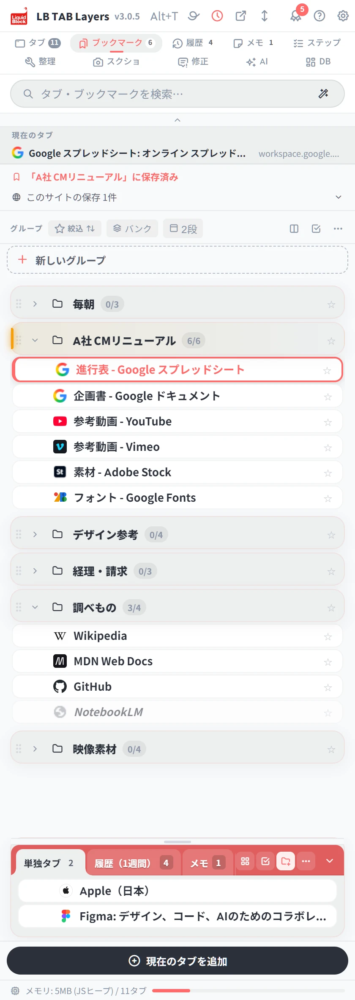
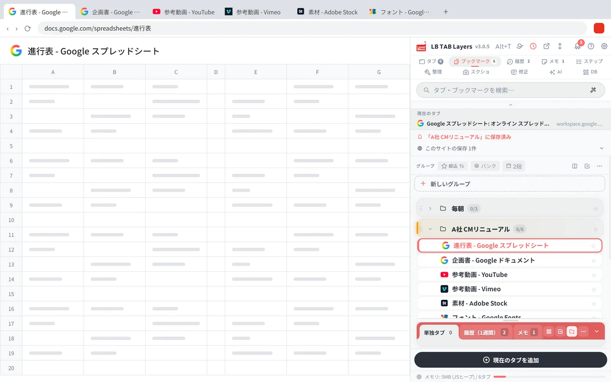
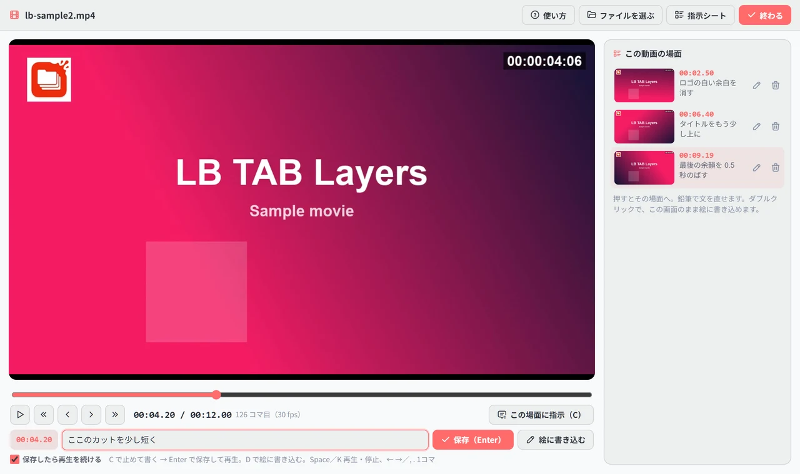
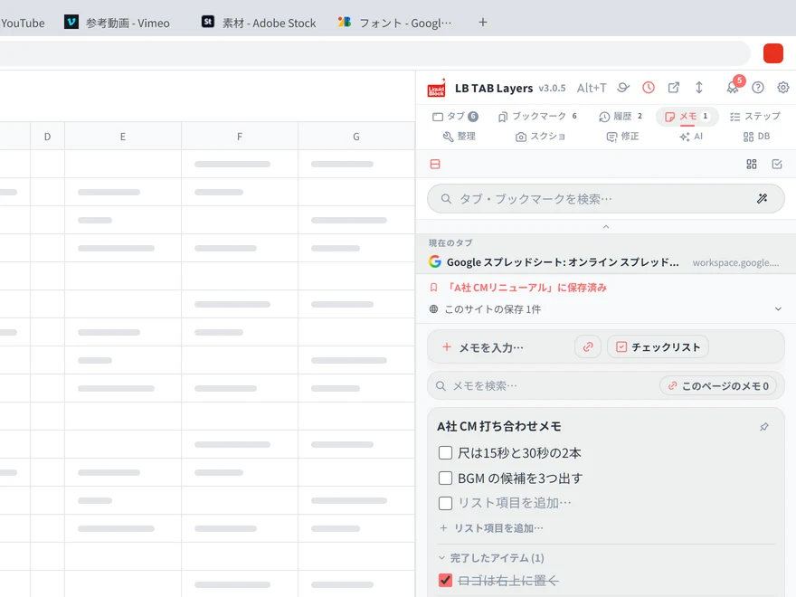
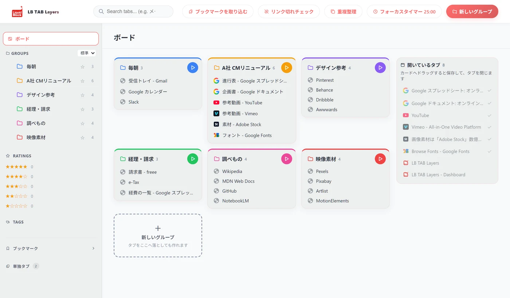
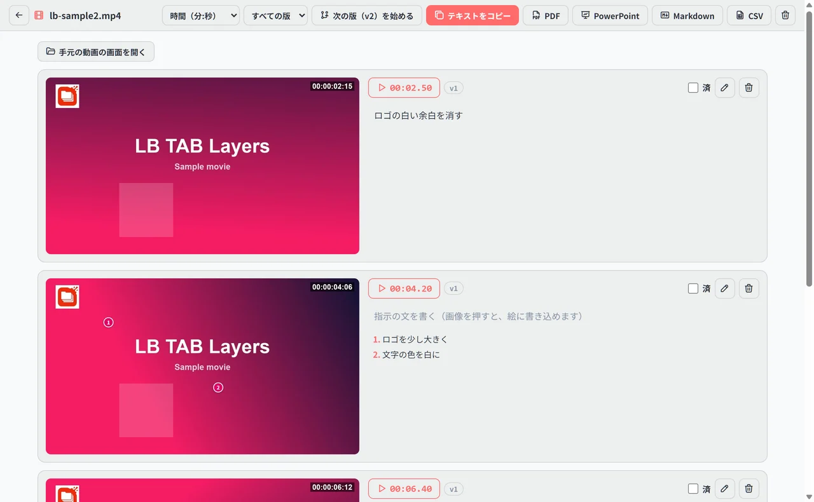

あのページ、
どこだっけ。
- 開きっぱなし閉じたら戻れない気がして、閉じられない。
- 探しまわるタブの海を、毎日5分、10分。
- ぜんぶ消える重くて再起動したら、タブがない。
手は動いているのに、仕事は進んでいない。
そんな時間を、なくします。
ブックマークとタブを、ひとつの画面で同時に管理。
タブは「今」。ブックマークは「引き出し」。
仕事のタブを案件ごとにしまって、まとめて開く。
Alt+T で、いつでも開けます。

手は動いているのに、仕事は進んでいない。
そんな時間を、なくします。
あとで使うものは、引き出しへ。
やることと、とっておくもの。
分けるだけで、頭が軽くなります。

終わったタブを、まとめて閉じる。
案件のタブを、まとめて開く。
「めーる」で、Gmail が出てくる。

ブラウザの横に、いつも同じ画面。
上にブックマーク、下に今のタブ。
行ったり来たりしなくても、ぜんぶ見えます。
Alt+T を押せば、どのページからでも開きます。

しまう先は、Chrome のブックマークです。
だから、安心して閉じられます。
1回は数十秒。でも、毎日何十回もやっています。
浮いた時間を、考えることに使ってください。

動画を上げ直さなくても、ブラウザで見ているその動画に書けます。YouTube、Vimeo、Google ドライブ、Web ページに埋め込まれた動画。
映像をつくる会社が、自分たちの修正のやりとりのために作りました。
最初は、タブとブックマークだけで十分です。
必要になったとき、すぐ隣にあります。



使うほど、メダルがたまります。はじめての操作には、小さなお祝いも。
入れたら、すぐ使えます。
保存先は、あなたの Chrome のブックマークです。
無料ではじめて、気に入ったら買い切りで。

Liquid Block は、映像とモーショングラフィックスをつくる会社です。企画書の資料、オンラインのツール、たくさんの AI。制作の現場は、タブであふれます。
探す、開き直す、作り直す。そんな作業に、考える時間を取られたくなくて、自分たちのために作りました。
はい。保存、検索、まとめて開く・閉じるは、無料で使えます。最初の3か月は、すべての機能を試せます。PRO は買い切りで、月額はありません。
そのまま使えます。Chrome のブックマークを、そのまま取り込んで整理できます。
保存したタブは、Chrome のブックマークとして残ります。テーマや色などの設定は、消えます。
Google Chrome（114 以降）で使えます。Windows・Mac・Linux・ChromeOS に対応しています。Edge 版は準備中です。